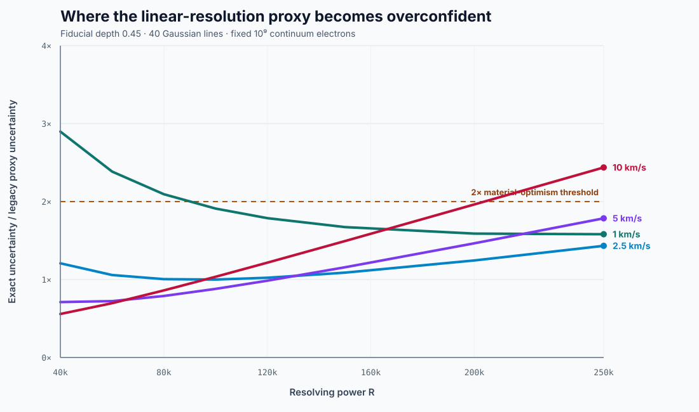

Project claims
SHA-256, LF-normalised text
f8620d25614b91740836d9194f7ec17b68603b0be015ec2fecb14b417ffbfeb6Browse 7 versioned evidence files. Table previews simply display stored rows. Consult the project report for the source, processing steps, and inference assumptions.

f8620d25614b91740836d9194f7ec17b68603b0be015ec2fecb14b417ffbfeb6203d1f921faff60fc81a2562a0bd740bdf526529096c908cc845891298e7439054a389dd4dc2f12ed8c087e7d485f7ddf84ee80b7174500ba16b253999b352dccd773a7c1f5f4d8477019d7a416914c827891b2ea86573eff688c7358b6d973c2db858119620764dee3f05aa3a7ee081d8580b1f11b7199f2a022007d256441a| resolution | intrinsic_fwhm_km_s | line_depth | line_count | exact_sigma_m_s | proxy_sigma_m_s | exact_to_proxy_ratio |
|---|---|---|---|---|---|---|
| 40000 | 1 | 0.2 | 20 | 27.669086461 | 9.461153528 | 2.924493972 |
| 40000 | 1 | 0.2 | 40 | 19.564998666 | 6.690045818 | 2.924493972 |
| 40000 | 1 | 0.2 | 80 | 13.834543230 | 4.730576764 | 2.924493972 |
| 40000 | 1 | 0.45 | 20 | 12.183510518 | 4.204957124 | 2.897416112 |
381eca4043ca0b63b1455bec15cd377cd1b5cb15e2fc298fec5993428a564cb11064f6a45f64c04a336fe11bb10a36a6a81ccff3443521c477bc16bf7dccbc00SHA-256 values verify the stored files. They do not independently validate the scientific analysis. Rebuild this page with python scripts/evidence_catalog.py followed by python scripts/render_evidence_page.py.